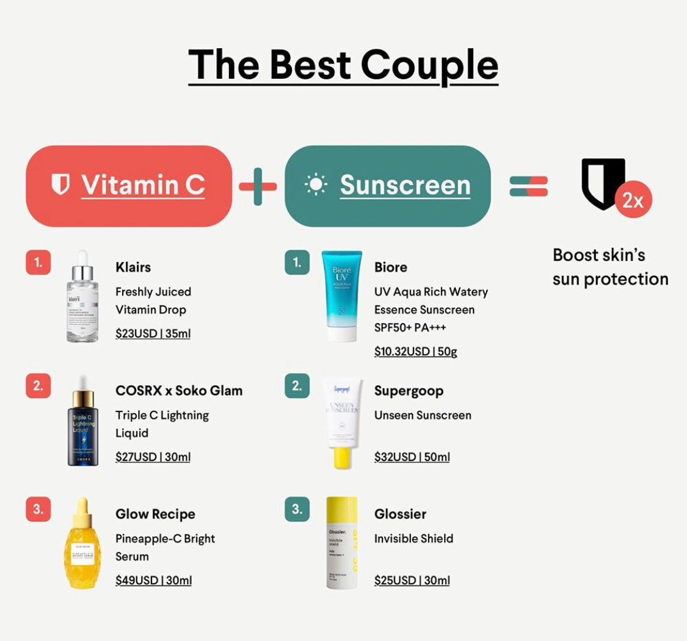
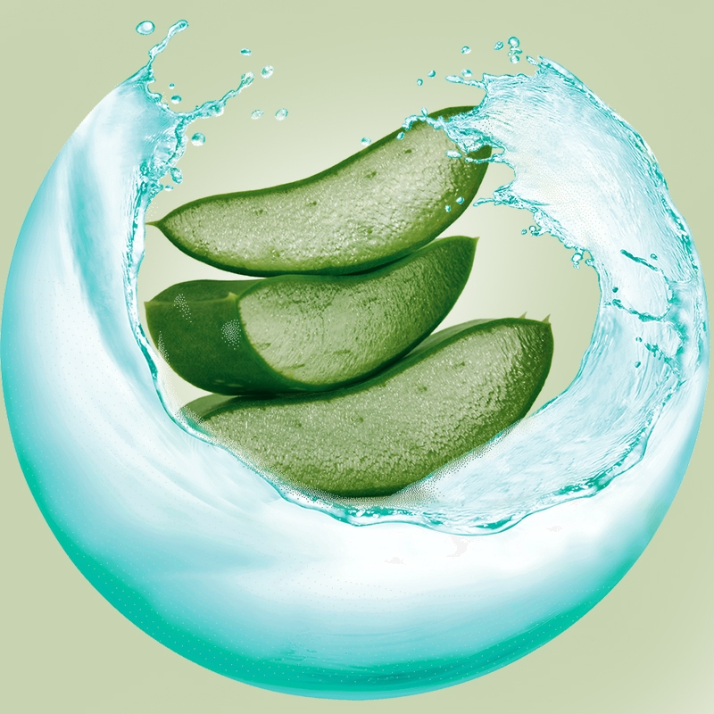

The antioxidant properties of vitamin C aids in your skin's natural regeneration process, which helps your body repair damaged skin cells. Vitamin C's benefits for skin are vast, including its ability to even out skin tone and diminish the appearance of fine lines and wrinkles

Sunscreen protects your skin from the sun's harmful ultraviolet rays, which come in two forms – UVA and UVB rays. It protects sensitive skin against sunburn and it reduces the appearance of sun damage – discolorations and dark spots, sagging or leathery skin, and wrinkles
_________ _________ _________ _________ _________
Aloe Vera is Perfect for DIY Face Mask!
Get yourself an aloe plant at home and the possibilities are endless. Filet the aloe leaf and apply the clear gel directly to the face as a mask. Extract the gel and make your own scrub. Our go-to DIY aloe recipe includes mixing aloe vera gel with olive oil and brown sugar. This can be used as an exfoliator to remove dead and dry skin.

Top 5 DIY Aloe Face Masks
1. Aloe vera and honey mask, for skin-soothingHoney offers soothing benefits, making it a perfect addition to an aloe vera face mask. Adding honey to your aloe mix can calm redness, reduce scarring, and moisturize the skin. Just be sure to add less honey than aloe (a 1:2 honey-to-aloe ratio might be best, Plescia suggests) or the mixture will be rather sticky.2. Aloe vera and apple cider vinegar mask, for gentle exfoliationAloe is already naturally exfoliating (it contains beta-hydroxy acid and salicylic acid, which will help to gently exfoliate the skin. ACV is also naturally exfoliating, but it might be helpful to pair it with a soothing agent like aloe. It's great to pair apple cider vinegar with an anti-inflammatory such as aloe vera to help lessen potential skin irritation." If you don't have ACV on hand, another great option is adding a physical exfoliator, like some sugar or coffee grounds, as these granules can gently remove debris and pair great with soothing aloe3. Aloe and turmeric mask, for skin-brighteningTo target skin discoloration, you'll want to have this brightening turmeric mask at the ready. Curcumin, the main ingredient of turmeric, has a slew of skin benefits, from neutralizing free radicals to reducing hyperpigmentation. Because aloe is a dark spot remedy in and of itself, adding turmeric to the mix can give this mask quite the skin-brightening boost. Don't have turmeric? Citrus fruits can do the trick: "Lemons or oranges with their high vitamin C content might help to even skin tone.4. Aloe vera and yogurt mask, for even skin toneFor dry, flaking skin, coconut oil (or olive oil, says Plescia, if that's all you've got) is your go-to add. Coconut oil is a great natural moisturizer for the skin, especially for those who suffer from eczema. When paired with aloe, it's a hydrating powerhouse of a mask. But proceed with caution if you're experiencing breakouts: "Coconut oil can lead to breakouts, so be careful if you're acne-prone.5. Aloe and coconut oil mask, for moisturizingGot probiotics? While we've just only scratched the surface in terms of skin microbiome research, the science looks promising for reducing acne and evening skin tone. For more of a hydrating boost, combine aloe with this common kitchen ingredient for some skin-healthy benefits.